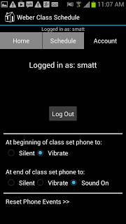
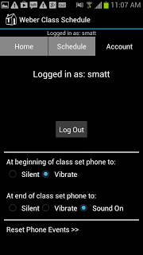

In Hamlet's Blackberry William Powers coins the term "Walden Zone" as a space to retreat to when one feels inundated by digital distractions. While Powers mainly defines these Walden Zones as actual physical spaces I have been investigating whether they might be created through digital means. As part of a project funded by a National Endowment for the Humanities grant I coded a "concentration browser" that helps educators modulate digital distractions while students work in a writing lab. That browser is now used in all of the Weber State University testing centers and is available commercially as part of the Chi Tester assessment software. Results of our work using the concentration browser are available in our article Concentrating Class: Learning in the Age of Digital Distractions .
 

Walden Zone App
In the wake of completing our NEH project I've continued to investigate and create digital Walden Zones. My most recent effort is a mobile app that downloads student's schedules and prompts the student to silence their phone during class.
On the drawing board is an app that projects a Walden Zone via a Bluetooth signal. Users who are in the vicinity of a Bluetooth Walden Zone will be aware of its presence if they have the device installed on their phones.
There are some interesting practical and political conundrums that arise when creating digital Walden Zones. The apps raise interesting questions about digital etiquette, the import of using technology to resolve problems that are (in part) created by technology, and the political desirability of attempting to create Walden Zones through technological means. But raising those questions, and nudging users to formulate answers, is part of why these apps are useful. My ongoing investigations in this area are informed by theory but are anchored in practicums that provide answers to these questions via hands on use of these technologies.